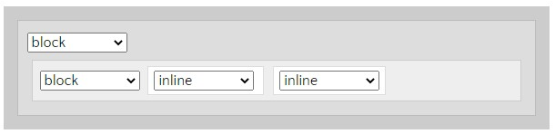

|
|
Propiedades básicas de CSS, Display: inline, block, inline-block |
display : inline:El elemento aparece en línea por ejemplo dentro de un elemento block. Ejemplos de elementos definidos como inline: span, em, strong, etc... Cuando un elemento inline se encuentra entre dos elementos block, el elemento inline se comporta como un block anónimo, de mínima anchura (por ejemplo la anchura del texto dentro de este elemento.) 
|